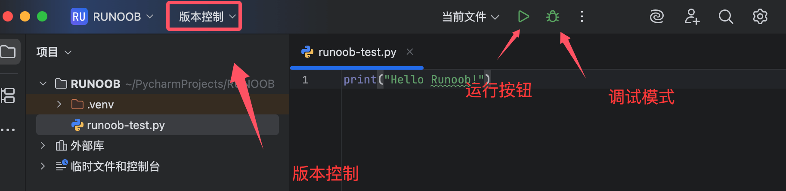
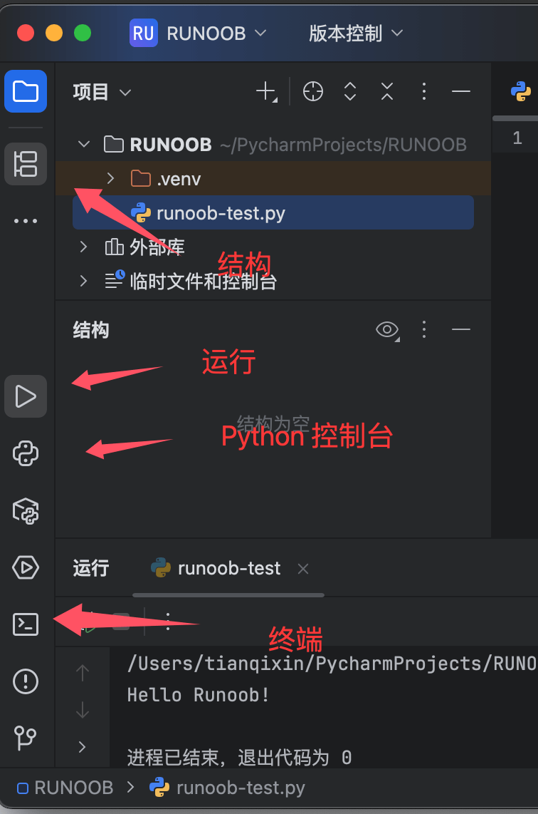
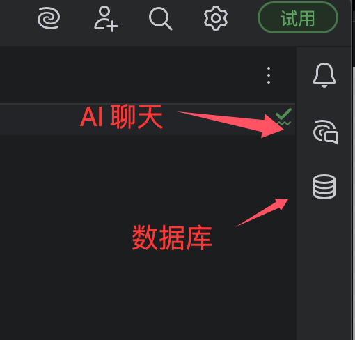
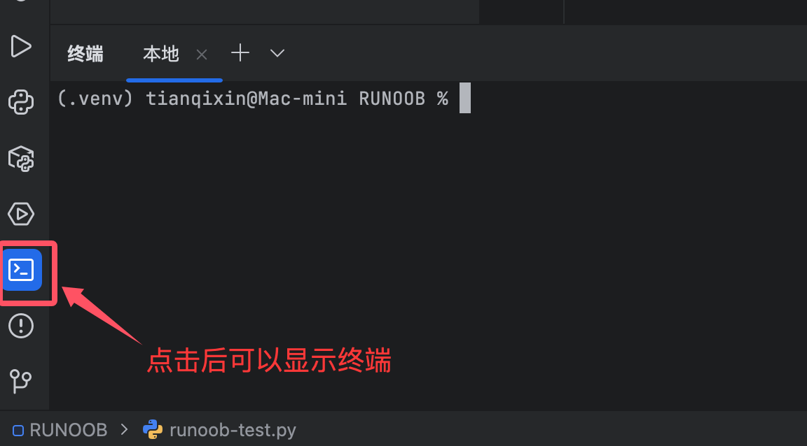
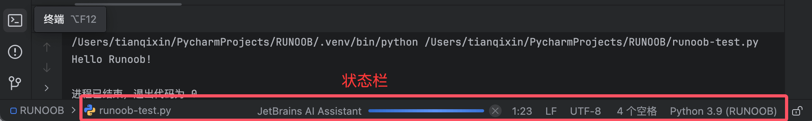

PyCharm インターフェース説明
PyCharm のデフォルトインターフェースは主に以下のエリアに分かれています：

-
上部メニューバー：ファイル(File)、編集(Edit)、表示(View)、ナビゲート(Navigate)など
-
ツールバー：よく使う操作のショートカットボタン
-
ナビゲーションバー：現在のファイルパスの簡易ナビゲーションを表示
-
サイドツールウィンドウ：左右両側の各種機能パネル
-
エディターエリア：中央のコード編集エリア
-
ステータスバー：下部にプロジェクトステータス情報を表示
二、主要機能エリア詳細解説
1. 上部メニューバー（日本語対応）
-
ファイル(File)：プロジェクト/ファイル操作（新規作成、開く、設定など）
-
編集(Edit)：コード編集操作（コピー、検索、コード生成など）
-
表示(View)：インターフェース表示制御（ツールウィンドウ、外観など）
-
ナビゲート(Navigate)：コードジャンプ関連機能
-
コード(Code)：コードのリファクタリングと生成
-
リファクタリング(Refactor)：コードリファクタリング機能
-
実行(Run)：実行とデバッグ
-
ツール(Tools)：統合ツール（データベース、ターミナルなど）
-
バージョン管理(VCS)：Gitなどのバージョン管理
-
ウィンドウ(Window)：ウィンドウレイアウト管理
-
ヘルプ(Help)：ドキュメントとサポート
2. ツールバーアイコン（よく使う機能）

-
実行ボタン ：現在のプロジェクト/スクリプトを実行
-
デバッグボタン ：デバッグモードで起動
-
コミットボタン ：バージョン管理でコミット
-
プロジェクト更新 ：VCSから更新
-
履歴 ：ローカル履歴を表示
-
設定 ：設定ウィンドウを開く
3. 左側ツールウィンドウ

プロジェクト(Project)パネル：
-
プロジェクトのディレクトリ構造を表示
-
右クリックメニューでファイル操作が可能
-
ファイルのフィルタリングと並び替えに対応
ストラクチャー(Structure)パネル：
-
現在のファイルのコード構造（クラス、メソッドなど）を表示
-
指定した要素へすばやくジャンプ可能
Pythonコンソール(Python Console)：
-
対話型Python実行環境
-
変数の表示とコードスニペットの実行に対応
ターミナル(Terminal)：
-
システムコマンドラインターミナル
-
PowerShell/CMD/bashなどに対応
4. 右側ツールウィンドウ

AI チャット：
-
AI チャットウィンドウ
データベース(Database)：
-
データベース接続管理
-
SQLクエリの実行と結果の表示
5. 下部ツールウィンドウ

実行(Run)：
-
プログラム出力の表示
-
デバッグコンソール
問題(Problems)：
-
コードエラーと警告の集約
-
クリックで問題コードにジャンプ
TODO：
-
コード内のTODOコメントを収集
-
モジュールごとにグループ化して表示
バージョン管理(Version Control)：
-
Gitなどのバージョン管理操作
-
変更ファイルのリスト
6. エディターエリア

-
タブ：開いているファイルを表示、グループ化に対応
-
コード編集エリア：メイン作業エリア、以下に対応：
-
シンタックスハイライト
-
コード折りたたみ
-
行番号表示
-
エラー波線のヒント
-
-
右側スクロールバー：コード解析マーカー（エラー/警告など）を表示
-
ガターエリア：ブレークポイント、ブックマークなどを表示
7. ステータスバー

-
インタープリター表示：現在使用中のPythonインタープリター
-
エンコーディング形式：ファイルエンコーディング（UTF-8など）
-
改行コード：LF/CRLF
-
カーソル位置：行:列の表示
-
メモリインジケーター：IDEのメモリ使用状況
三、インターフェースカスタマイズのコツ
レイアウト調整：
-
ツールウィンドウのタイトルをドラッグしてドッキング/フローティング
-
ツールウィンドウのタイトルを右クリックして表示位置を設定
-
表示(View) → ツールウィンドウ(Tool Windows) で各パネルの表示を制御
デフォルトレイアウトを復元：
-
ウィンドウ(Window) → デフォルトレイアウトを復元(Restore Default Layout)
全画面モード：
-
表示(View) → 全画面モード(Enter Full Screen)
-
またはショートカットキー Ctrl+Shift+F12 を使用
分割編集：
-
エディタータブを右クリック → 分割(Split)
-
垂直/水平分割に対応
四、日本語インターフェースの特別な説明
用語対応：
-
"Refactor" → "リファクタリング"
-
"Inspect Code" → "コード検査"
-
"Run Configuration" → "実行構成"
日本語入力の問題、入力メソッドが追従しない場合は、以下を試してください：
-
ファイル → 設定 → 外観と動作 → 外観 → 「ネイティブ入力メソッドを使用」のチェックを外す
-
または別の入力メソッドに切り替える
日本語エンコーディング設定：
-
ファイル → 設定 → エディター → ファイルエンコーディング
-
UTF-8に設定することを推奨
-
既存ファイルを処理するために「透過的変換」を設定可能
五、よく使うビューモード
集中モード：
-
表示(View) → 集中モードに入る(Distraction Free Mode)
-
すべてのツールウィンドウを非表示にして、コード編集に集中
プレゼンモード：
-
表示(View) → プレゼンモードに入る(Presentation Mode)
-
コードフォントを拡大、プレゼンに最適
プロジェクト全体ビュー：
-
Shiftをダブルクリック → 「プロジェクトビュー(Project View)」を検索
-
プロジェクト構造のブラウズを最大化